Blue Marvel (Adam Brashear) (Terre-616)
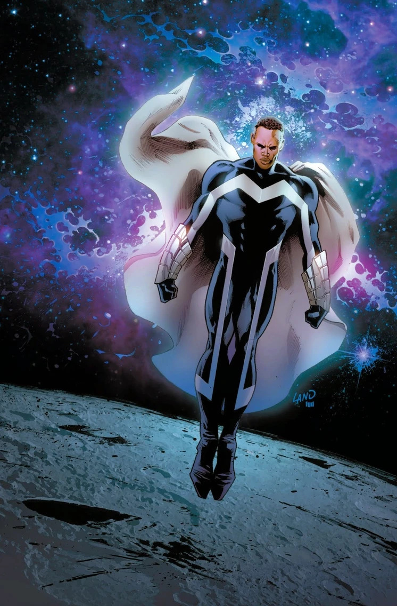
Origines :
Né vers 1930 à Chicago, le jeune Adam Brashear suivit de brillantes études à l'Université de Cornell.
Avant même d'obtenir son diplôme, il s'engagea chez les Marines et participa à la Guerre de Corée, devenant un héros de guerre.
Pendant son séjour, il rencontra Conner Sims, un autre homme de science qui deviendra plus tard Anti-Man.
Après la guerre et l'obtention de son diplôme en 1954, il devint professeur de physique et mena un projet scientifique visant à canaliser l'antimatière par un réacteur liant la Zone Négative avec notre Univers lui-même, dans le but de créer une source d'énergie propre et illimitée.
Mais une explosion inattendue généra un champ d'énergie et de radiations et Sims fut désintégré sur le champ.
Brashear, quant à lui, fut changé en un réacteur d'antimatière vivant, et se servira de ses nouvelles capacités pour combattre le crime sous le nom de Blue Marvel.
Il reprit ses recherches et tenta d'élucider le mystère des apparitions du mystérieux Infinaute sur Terre.
En 1962, l'aventurier, travaillant parfois pour le gouvernement, reçut la Médaille de la Liberté des mains du président John F. Kennedy, qui lui demanda aussi de prendre sa retraite car Blue Marvel provoquait un scandale national à cause de ses origines Afro-Américaines révélées après la perte de son casque en public.
Le héros accepta, mais sauvera tout de même une nouvelle fois la Terre d'une invasion alien, après quoi il laissa sa médaille sur la lune, où il rencontra Uatu, le Gardien après avoir été déclaré mort par le gouvernement.
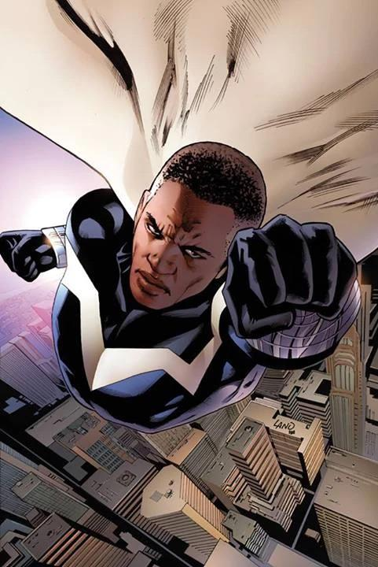
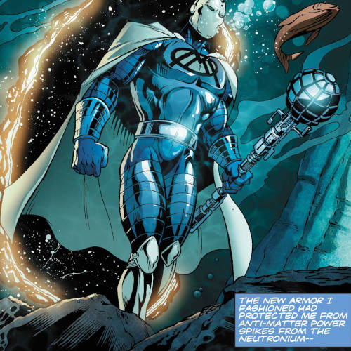
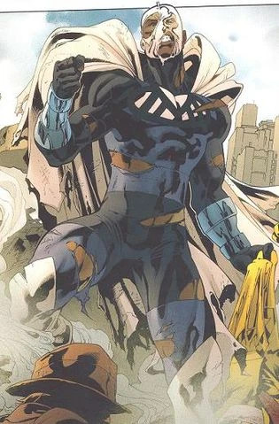
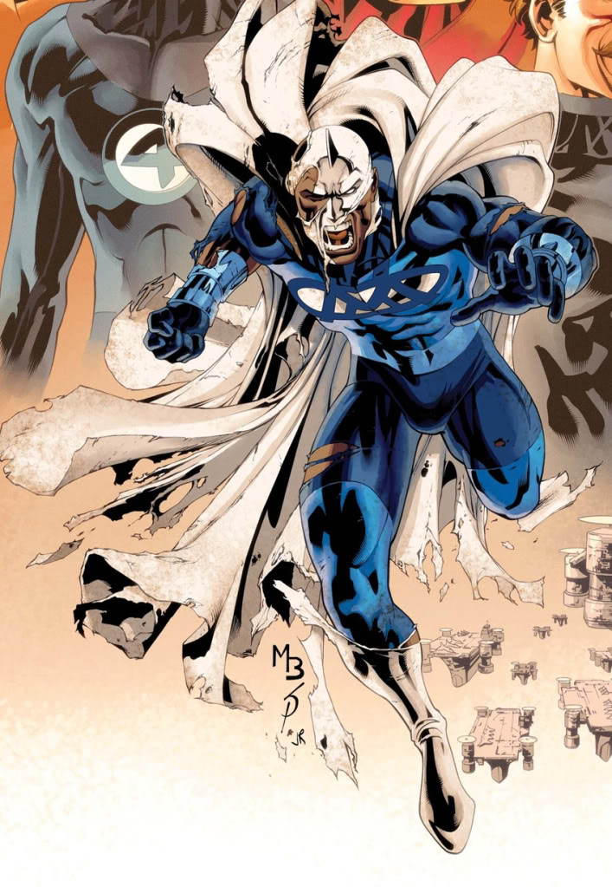
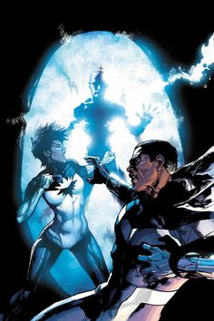
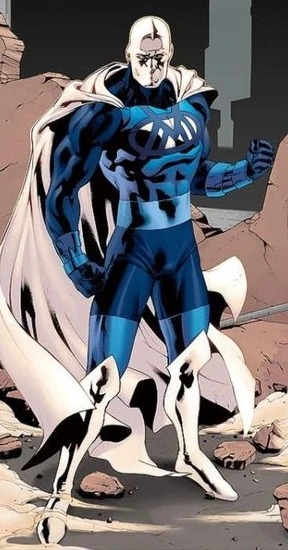
Personnalité :
Blue Marvel est un personnage très intelligent, posé avec un profond code moral.
C'est avant tout un scientifique de génie, spécialisé en physique théorique, astrophysique et en énergie.
Il a tendance à analyser les problèmes rationnellement plutôt que de foncer tête baissée.
Il possède également un fort sens de la justice et du devoir. Il cherche principalement à faire ce qu'il considère comme juste, même si cela doit l'impacter personnellement.
Bien qu'il soit un héros surpuissant, il est généralement calme et mesuré, avec une certaine gravité et parlant souvent comme un homme de science plutôt qu'un super-héros arrogant.
Capacités :
Blue Marvel possède des capacités lui permettant de rivaliser avec Sentry ou Hulk.
Il possède une force surhumaine, aux limites encore inconnues. On l'a vu déplacer un météore de la taille de l'Arkansas, ou encore déplacer un porte-avions sur une distance considérable comme si de rien n'était.
Il possède également une vitesse de réaction, de déplacement et de pensée surhumaines, avec une endurance quasi-illimitée.
Il peut voler en manipulant les gravitons et les champs magnétiques, en contrôlant son mouvement moléculaire combiné à sa vitesse exceptionnelle.
Il peut donc aisément atteindre la vitesse de libération (environ 34 fois la vitesse du son).
Ses sens sont également améliorés, et il possède la capacité de détecter et de comprendre des choses sur des niveaux dépassant les capacités humaines.
Il est quasiment invulnérable, capable de résister à d'énormes forces d'impact, à l'exposition à des températures des pressions extrêmes et de puissantes explosions d’énergie dans subir de blessures, et est même capable de survivre dans le vide spatial.
En plus de cette quasi-invulnérabilité, il est tout de même possible de le blesser, mais cependant son corps possède une capacité de régénération capable de réparer les tissus endommagés avec beaucoup de rapidité.
En plus de ses capacités physiques, Blue Marvel est capable de générer et de contrôler l'anti-matière.
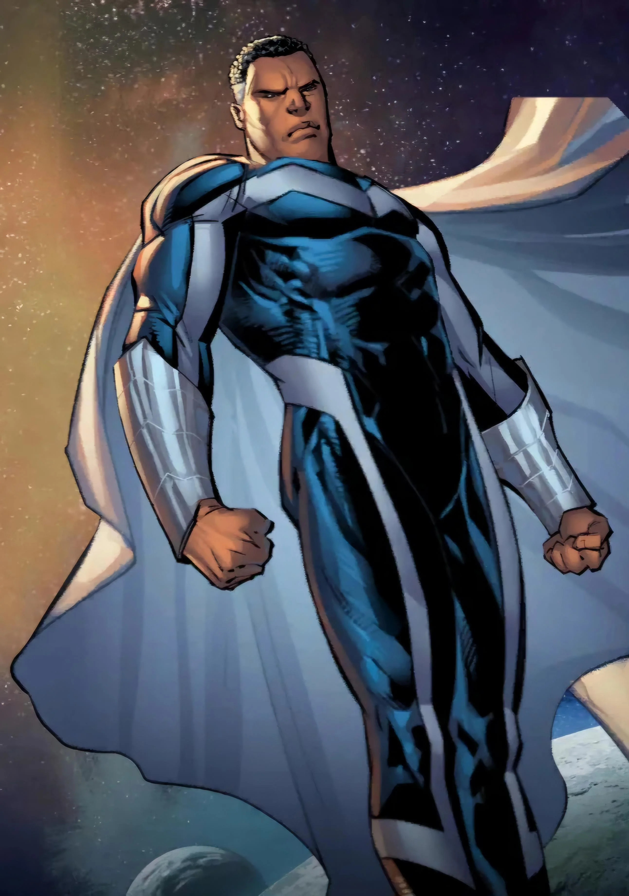
Apparence :
Adam Brashear est un homme afro-américain assez grand, très musclé et athlétique, avec une carrure imposante.
Son costume emblématique est principalement bleu et blanc composé d'une combinaison bleu foncé très ajustée au corps, avec de larges motifs blancs sur le torse, des bandes blanches verticales descendant sur les côtés, avec des gantelets blancs et une longue cape blanche attachée aux épaules.
A l'origine, il possédait également un casque intégral argenté recouvrant son visage.
Les principaux ennemis de Blue Marvel
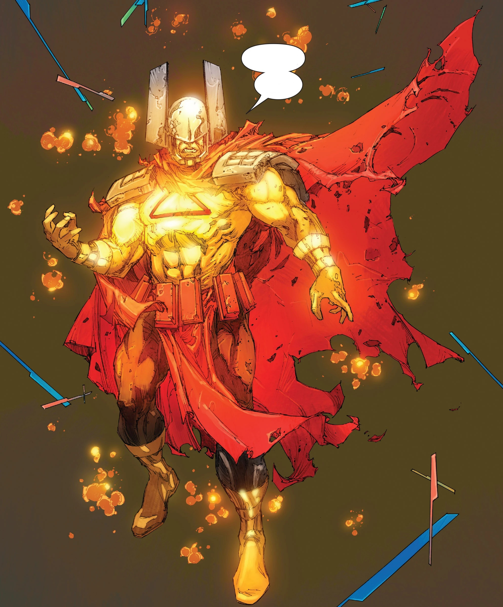
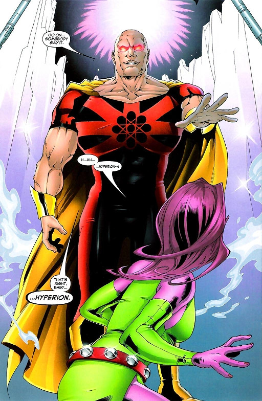
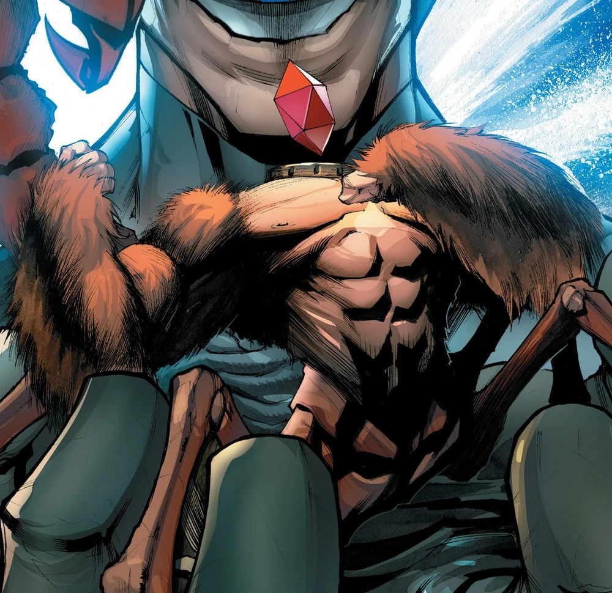


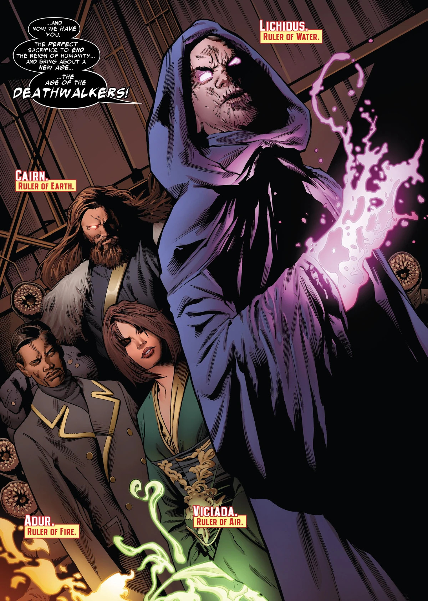
Équipes affiliées